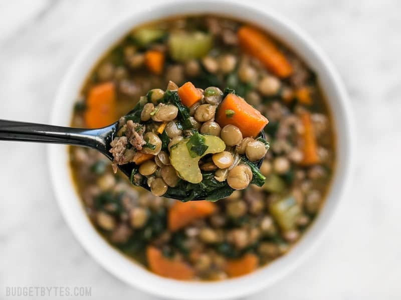

home
Lentil & Sausage Stew
recipe source

Description
Okay, you’re really going to have to try not to judge a book by its cover here. I know this Lentil & Sausage Stew isn’t the prettiest thing to look at but, OMG, it will knock the socks right off your taste buds! No joke. We’re talking insanely delicious here… like “at the end of the week I’ll be sad that there isn’t any left” delicious. But worry not, it makes a huge batch so you can always stash a few servings in the freezer for later.
Ingredients
- 1/2 lb. Italian sausage
- 1 yellow onion
- 3 carrots
- 4 ribs celery
- 2 cloves garlic
- 2 cups brown lentils
- 6 cups chicken broth
- 1/2 tsp cayenne
- 1 tsp smoked paprika
- 1 tsp ground cumin
- 1 tsp dried oregano
- 10 oz. frozen spinach
Instructions
- Brown the sausage in a large pot over medium heat, breaking it up into pieces as it cooks.
- While the sausage is cooking, prepare your vegetables: wash, peel and slice the carrots, slice the celery, dice the onion, and mince the garlic. Once the sausage is cooked, add the vegetables to the pot and continue to sauté until the onions are soft and transparent (about 5 min).
- Add the lentils to the pot along with the cayenne, cumin, smoked paprika, oregano, and chicken broth.
- Place a lid on the pot, turn the heat up to medium-high, and allow it to come up to a boil. Once it reaches a boil, reduce the heat to low and let simmer for 30 minutes or until the lentils are tender. Add more water if it gets too dry.
- Stir in the frozen spinach and cook for about 15 minutes more. Serve with a thick slice of crusty bread!